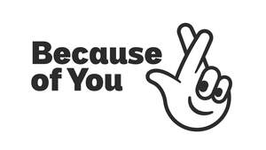

Trade Mark Journal No.2026/010 6 March 2026
UK00004344897 24 February 2026 (35,36,41)
Mark 1

Mark 2
- Class 35
- Advertising, marketing and promotion services; Radio and television advertising; Newspaper and magazine advertising; Digital advertising and marketing; Business management, organisation and administration services relating to the promotion of charitable fund raising; Arranging of promotional events for charitable fundraising; Arranging promotion of charitable fundraising events; Publicity services to promote the charitable works of others; Organising and conducting of volunteer programs and community service projects for charitable purposes; Promoting humanitarian activities; Promoting philanthropic services; Promoting the goods and services of others by arranging for sponsors to affiliate their goods and services with an awards program, a sports competition or sporting activities; information, advisory and consultancy services relating to all the aforesaid services.
- Class 36
- Charitable fund-raising services; Fund-raising services; Benevolent fund services; Financial grant services; Providing funding for non-profit entities; Providing project grants for environmental and health awareness projects; Providing project grants for local community projects; Providing project grants for education and social welfare projects; information, advisory and consultancy services relating to all the aforesaid services.
- Class 41
- Entertainment services; Organisation of cultural events; Organisation of community cultural events; Organisation of musical events; Organisation of recreational events; Organisation of sporting events; Providing facilities for sporting events, sports and athletic competitions and awards programmes; Sports club services; Organisation of educational events; Organisation, production and presentation of live entertainment and live performances; Hosting [organising] awards; Hosting [organising] awards relating to films; Hosting [organising] awards relating to television and radio; Television and radio entertainment; Arranging and conducting award ceremonies; Organising and conducting competitions, games, quizzes, events and audience participation events; Providing online electronic publications and editorial content; Educational and training services relating to health and mental wellbeing; Educational and training services relating to sport; Educational services relating to environmental issues and conservation of the environment; information, advisory and consultancy services relating to all the aforesaid services.
Gambling Commission
Representative: Freeths LLP